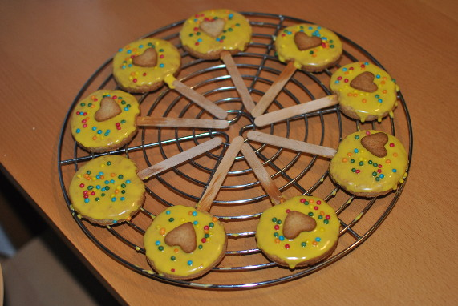

Kekslollies

- Zubereitung: ca. 30 Minuten
- Backen: ca. 15 Minuten
- Für ca. 15 Stück
Zutaten
- 150 g Butter
- 80 g Zucker
- 1 Ei
- 100 g Vollkornmehl
- 180 g Mehl
- 1 TL Backpulver
- Kuchenglasur, Schoko
- Zucker - Streusel
Zubereitung
- Butter, Zucker, Ei, Mehl, Backpulver und Salz zu einem glatten Teig verkneten. Den Teig in Frischhaltefolie einwickeln und für ca. 60 Minuten kühlen. Backofen auf 180°C vorheizen.
- Den Teig auf einer bemehlten Fläche ca. 5 mm dick ausrollen und mit einem Glas Kreise ausstechen. Auf ein mit Backpapier belegtes Backblech legen und Holzspatel in den Teigkreis einschieben. Ca. 15 Min. backen und auskühlen lassen. Dann mit
Schokoglasur bestreichen und mit Zuckerstreuseln bestreuen.
Quelle: http://www.chefkoch.de/rezepte/476911141659188/Kekslollies.html